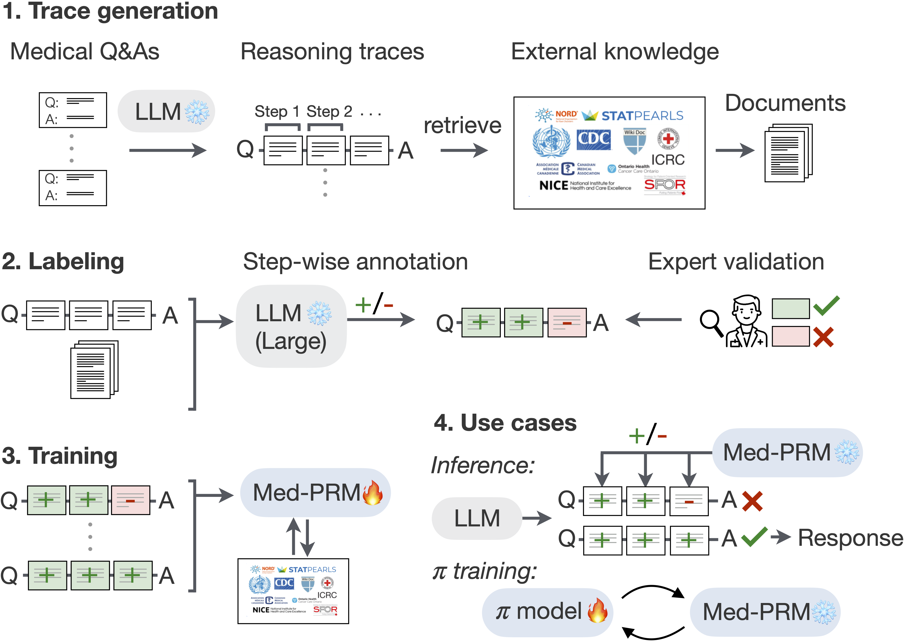

Medical Reasoning Models
with Stepwise, Guideline-verified
Process Rewards

MED-PRM introduces a new reward model for evaluating intermediate reasoning steps in clinical question-answering. Unlike traditional outcome-based supervision, MED-PRM uses retrieved documents to verify each reasoning step, enabling fine-grained, evidence-aligned training signals.
@misc{yun2025medprm,
title={Med-PRM: Medical Reasoning Models with Stepwise, Guideline-verified Process Rewards},
author={Jaehoon Yun and Jiwoong Sohn and Jungwoo Park and Hyunjae Kim and Xiangru Tang and Daniel Shao and Yong Hoe Koo and Ko Minhyeok and Qingyu Chen and Mark Gerstein and Michael Moor and Jaewoo Kang},
author+an = {1=first; 2=first; 3=first; 11=last; 12=last},
year={2025},
url={https://med-prm.github.io/},
eprint={2506.11474},
archivePrefix={arXiv},
primaryClass={cs.CL}
}